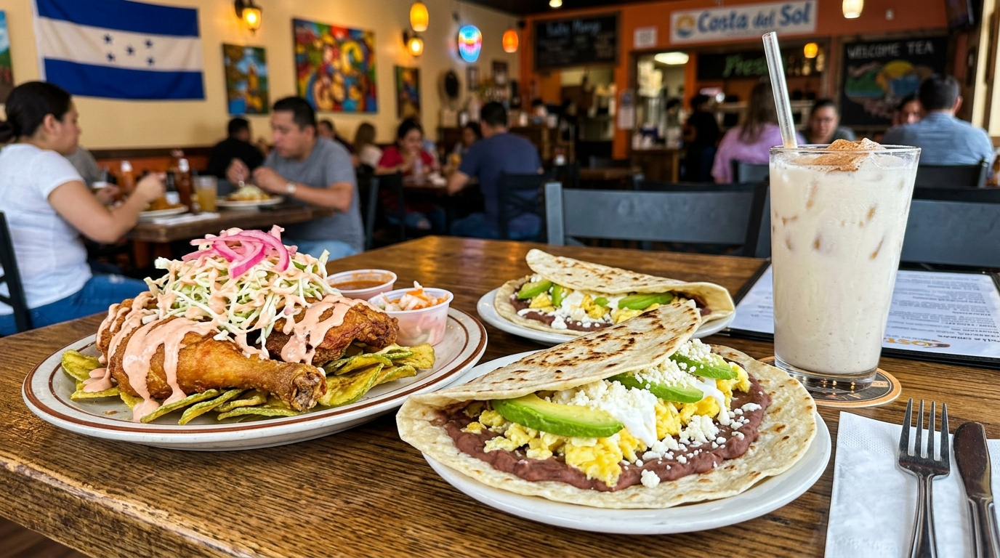

Signature Pollo con Tajadas
Crispy spiced fried chicken served over thin green banana chips, topped with pickled cabbage, chismol, & house pink sauce.
Discover Tajadas Technique →Charlotte's beloved Honduran & Central American kitchen at 8045 South Blvd. Serving golden fried chicken over green banana tajadas, loaded baleadas, pupusas, Sopa de Mondongo, and tropical horchata.

Traditional Honduran recipes, freshly pressed flour baleadas, and vibrant Central American flavors.
Crispy spiced fried chicken served over thin green banana chips, topped with pickled cabbage, chismol, & house pink sauce.
Discover Tajadas Technique →Warm hand-pressed flour tortilla folded over refried red beans, scrambled eggs, avocado slices, mantequilla, & dry cheese.
Explore Baleada Craft →Simmered Sopa de Mondongo, handmade Salvadoran pupusas, carne asada platters, and refreshing maracuyá juice.
View Full Latin Menu →